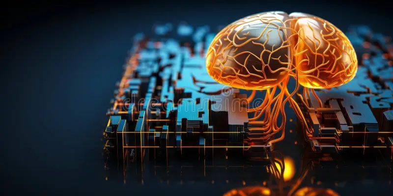

השתלת מוח – מדע בדיוני או עתיד רפואי? ואולי בכלל לא צריך מוח ביולוגי? 🧠
פורסם במקור ב LinkedIn
השתלת מוח – מדע בדיוני או עתיד רפואי? ואולי בכלל לא צריך מוח ביולוגי? 🧠
תארו לכם עולם שבו ניתן להחליף לא רק איברים פגועים, אלא את המוח עצמו. נשמע כמו משהו מסרט מדע בדיוני, נכון? אבל האם זה באמת כל כך מופרך?
🔬 מה אפשרי ומה לא?
כיום, השתלת מוח אינה אפשרית – לא טכנית, לא רפואית, ולא אתית. המוח הוא מערכת על-מורכבת, רשת מסועפת של מיליארדי נוירונים שמתקשרים זה עם זה, עם מערכת העצבים ועם שאר הגוף. העברת מוח מגוף אחד לאחר משמעה חיבור מחדש של כל הרשת הזו – משימה שנראית (בינתיים) בלתי אפשרית.
👀 אבל רגע, מה עם מחקרים קיימים?
מדענים הצליחו לשמר פעילות של רקמות מוח בתרביות, ובניסוי פורץ דרך מאוניברסיטת ייל, שמרו על פעילות חלקית של מוחות חזירים מחוץ לגוף באמצעות מערכת דמוית מחזור דם. זה לא מוח מתפקד במלואו, אבל זו בהחלט הצצה לעתיד.
🧠 ומה אם זה היה אפשרי?
אם נוכל אי פעם לבצע השתלת מוח, מי יהיה ה"אני" החדש? הגוף או המוח? האם זה אומר שהעברנו אדם שלם לגוף אחר, או שיצרנו ישות חדשה?
⚖️ השלכות אתיות ופילוסופיות
האם אדם עם מוח חדש הוא אותו אדם? מה יקרה לתודעה, לזיכרונות ולזהות האישית? ואיך בכלל נגדיר חיים במצב כזה?
אז אולי לא נגיע להשתלת מוח שלם, אבל הטכנולוגיות מתפתחות: חיבורי מוח-מכונה (BCI), הדפסת רקמות מוח, ודרכים חדשות לטיפול במחלות ניווניות כמו אלצהיימר.
אבל רגע - אולי בכלל לא צריך מוח ביולוגי? 💡
אם היינו יכולים להחליף מוח אנושי, למה לעצור במוח ביולוגי? הרי בינה מלאכותית כבר היום מדמה תהליכים קוגניטיביים – למידה, זיכרון, קבלת החלטות. האם בעתיד נוכל "להשתיל" לאדם מוח סינתטי מבוסס AI?
🤖 בינה מלאכותית כמוח חלופי?
דמיינו תרחיש שבו מוח ביולוגי כושל מוחלף במוח דיגיטלי – כזה שמחובר לנוירונים, מסוגל ללמוד ולהתפתח, ואולי אפילו לשמר את האישיות שלנו. זה נשמע כמו רעיון מטורף, אבל טכנולוגיות כמו ממשקי מוח-מחשב (BCI) כבר עושות צעדים בכיוון.
🧠 איפה הגבול בין אדם למכונה?
אם נוכל להעלות את התודעה שלנו לענן, או לחבר מוח לאינטליגנציה מלאכותית שתסייע לו, האם נהפוך לסייבורגים? והאם אדם עם מוח דיגיטלי עדיין יהיה... אנושי?
⚖️ השאלות האתיות רק מתעצמות
האם נוכל להוריד ולשמור את הזיכרונות שלנו כמו קובץ במחשב? ואם כן – מי יהיה הבעלים של המידע הזה? מה קורה אם ניתן יהיה "לערוך" מוח כמו תוכנה?
🚀 מה העתיד צופן?
האם העתיד הוא בשימור מוח ביולוגי, או דווקא ביצירת אינטליגנציה חלופית שתמשיך את קיומנו בצורה חדשה? אולי לא נשתיל מוחות, אלא פשוט נחליף אותם בתוכנה מתקדמת.
🚀 ואי אפשר בלי קצת אילון מאסק
אחד מהניסיונות המתקדמים ביותר לשלב בין מוח אנושי לטכנולוגיה מגיע מ-Neuralink, החברה של אילון מאסק. החברה פיתחה שבב מוחי שמאפשר קישור ישיר בין המוח למחשב, במטרה לשקם אנשים עם שיתוק, לשדרג את היכולות הקוגניטיביות שלנו, ואולי בעתיד – אפילו לאפשר העלאת תודעה.
💡 מציאות בפיתוח
לאחרונה, Neuralink ביצעה בהצלחה את השתלת השבב הראשונה בבני אדם, כשהמטופל מסוגל לשלוט במחשב רק באמצעות המחשבה. זה צעד ענק לעבר שילוב מוח-מכונה, ולמרות שהדרך עוד ארוכה, הטכנולוגיה הזו עשויה לשנות את ההבנה שלנו לגבי תודעה, זיכרון, ואולי אפילו לאפשר לנו "לגבות" את המוח שלנו.
🤔 שדרוג מוח או סיכון מסוכן?
אם בעתיד ניתן יהיה לחבר את התודעה שלנו לענן או לשדרג את החשיבה שלנו כמו תוכנה - האם זה יהיה סוף הדרך למוח האנושי הטבעי? ומה זה אומר על זהות, פרטיות, ושליטה טכנולוגית?
💬 האם הייתם מסכימים להשתיל שבב כזה בעצמכם?
